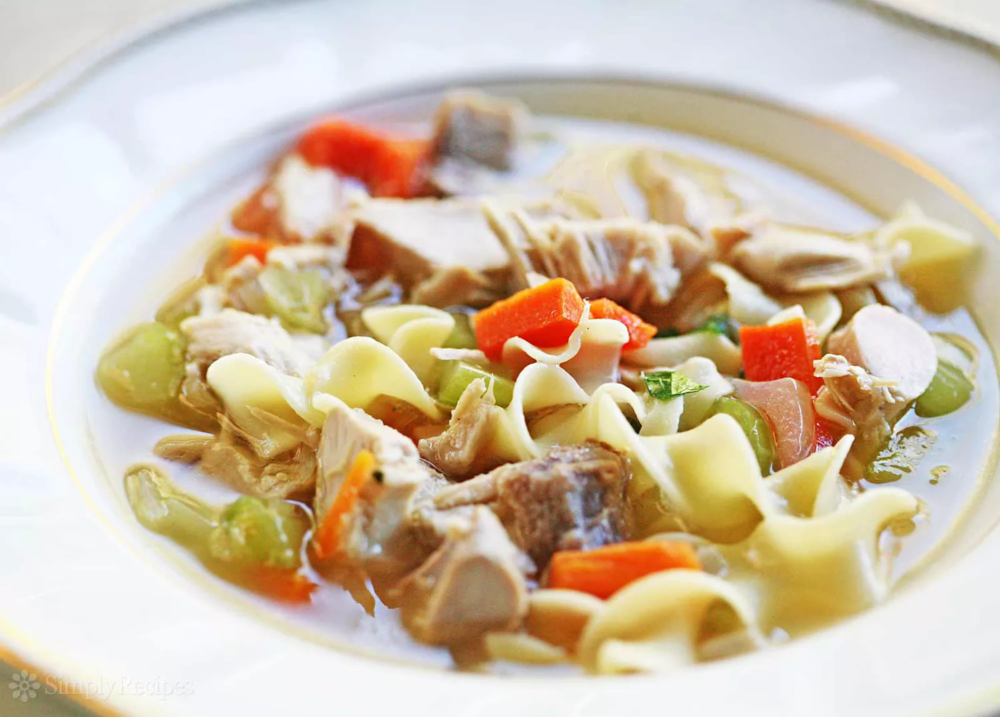

Mom's Turkey Soup

Description
Every Thanksgiving my mother takes what's left of the turkey carcass and makes a delicious turkey soup that we enjoy for days. The first step is to make the stock, which you can get started on right after dinner.
Ingredients
- Carcass from cooked 10- to 12-lb turkey
- 3 quarts (12 cups) water
- 1 teaspoon salt
- 1/2 teaspoon pepper
- 1/4 teaspoon poultry seasoning or dried sage leaves
- 1 dried bay leaf
- 1/2 cup uncooked pearl barley
- 3 medium carrots, sliced (1 1/2 cups)
- 1 cup chopped onions
- 2 medium stalks celery, sliced (1 cup)
- 3 cups cut-up cooked turkey
- 2 tablespoons chopped fresh parsley leaves, if desired
Steps
- Break up turkey carcass to fit 6-quart Dutch oven. Add water, salt, pepper, poultry seasoning and bay leaf. Heat to boiling over high heat; reduce heat to low. Cover; simmer 1 hour 30 minutes.
- Skim off any residue that rises to the surface. Remove bones, meat and bay leaf from broth; cool. When cool enough to handle, remove meat from bones, and cut into bite-size pieces; reserve. Discard bones and bay leaf.
- Skim fat from broth; discard. Stir in barley. Heat to boiling; reduce heat to low. Cover; simmer 30 minutes, stirring occasionally.
- Stir in carrots, onions, celery, 3 cups cooked turkey and reserved turkey cut from bones. Simmer uncovered 20 to 25 minutes, stirring occasionally, until vegetables and barley are tender. Stir in parsley.
Return to main page